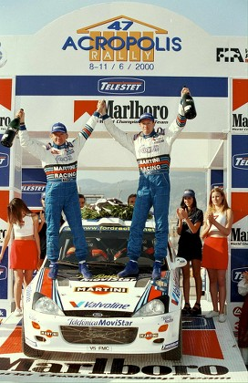

To enjoy all areas of this website including access to competitions and special offers, please log-in or register here, thank you.

Location:Itea Date:14 - 16 June Weather: Hot and sunny, last year temperatures reached over 30 degrees Overview:
The roughest rally in Europe - only the Safari can be described as tougher. One of the slowest events in the championship as rock strewn roads and strings of hairpins keep speeds down. Slow speeds and intense heat make engine cooling a problem and extreme cockpit temperatures ensure regular fluid intake is essential for crews. The rally now ignores the capital city of Athens and is based further north in the coastal town of Itea, just a few kilometres from the mountain town of Delphi according to the ancient Greeks, the true centre of the earth.
What happened last year
Ford and McRae took our third win of the year in Greece to put us in the lead of the Manufacturers' and Drivers' Championship. The rally was one of the toughest of the year with treacherous driving conditions and temperatures in the high 30s throughout. McRae's third consecutive victory was a rare feat. The last time the achievement was made was again by McRae back in 1995.
Greece promised much for Carlos Sainz. Throughout the whole rally Carlos and his co-driver Luis Moya had tracked McRae and Grist. Going in to the final, long and demanding, stage of the rally the Spanish pair were superbly positioned to take the lead but cruel luck dropped them out of the rally when engine failure forced their retirement.
The third Ford Focus pairing of Francois Delecour and Daniel Grataloup finished a magnificent fifth in a rally where the drama took place before the start of the first stage. While fitness training, Delecour fell from his mountain bike and severely sprained his right wrist. He persevered throughout the event (even putting up with power steering failure) to gain two drivers' championship.